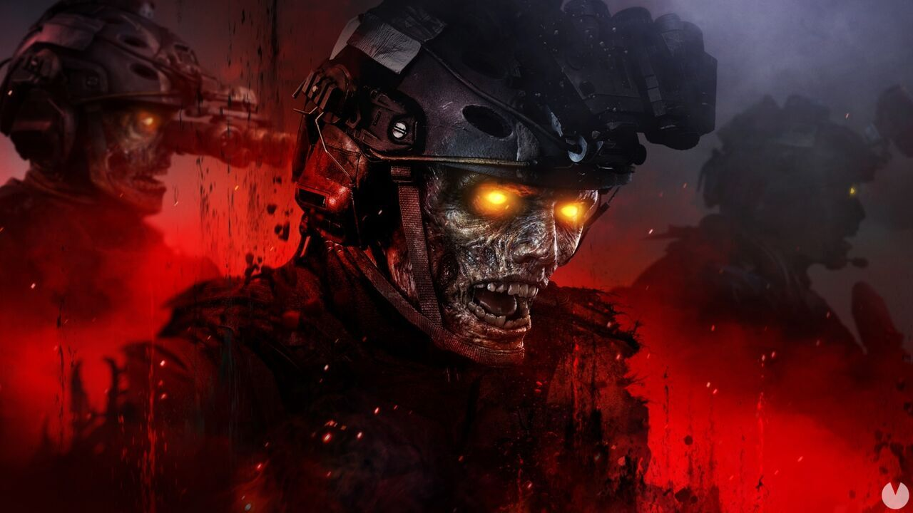

Los zombies especiales se pueden diferenciar muy facilmente de los normales, no solo por su velocidad, vida, daño y aspecto, tambien esta que muchos de estos zombies son UNICOS de muchos mapas, el panzer pese a que se puede encontrar en 3 mapas distintos, originalmente y el mal letal de todos es del mapa de origins de blackops 2, el zombie electrico tambien original de esos dos es unico por su aspecto, humanoide formado por electricidad, tambien estan los zombies de fuego de shangrila, asi como el guardia de mob of the dead, cada zombie especial es unico en un aspecto en especial, ya se por que portan armas o por que pueden matarte de un ataque.